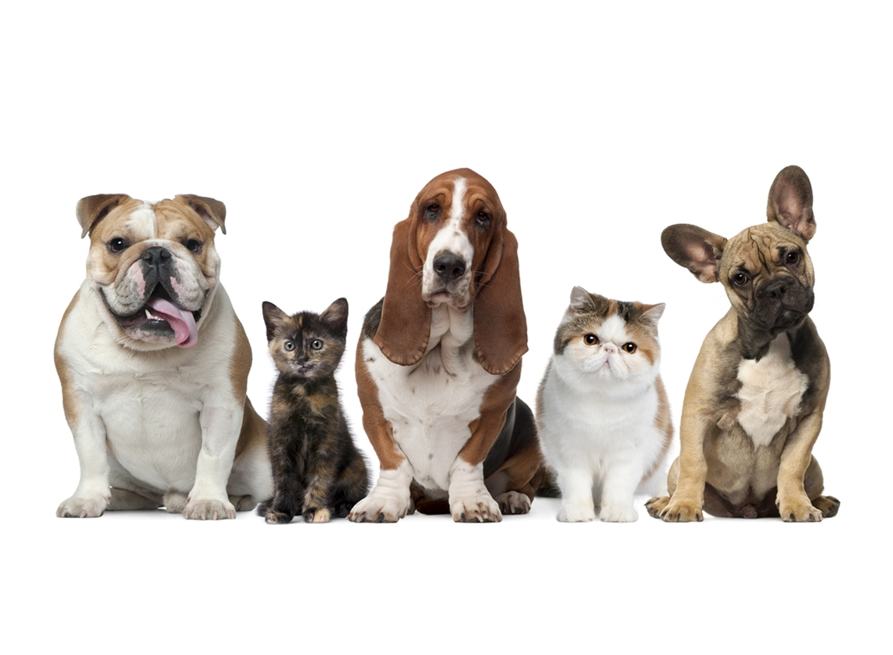
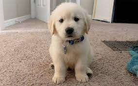
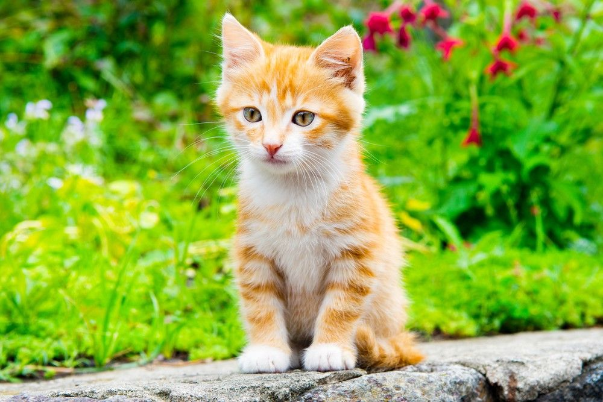
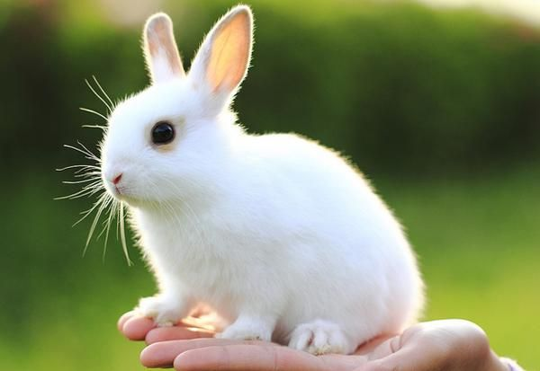
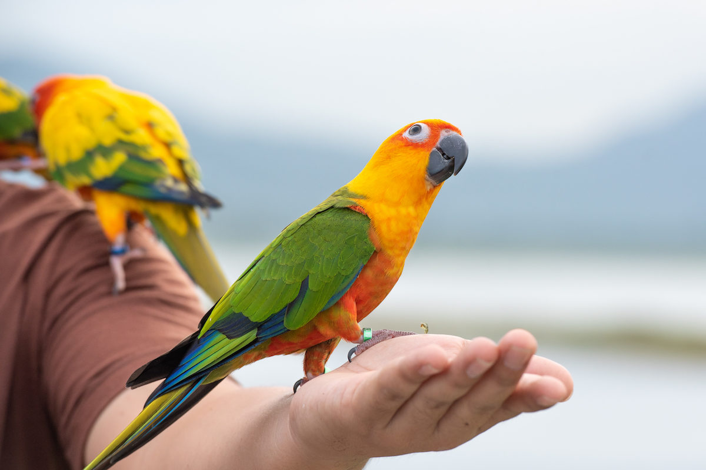
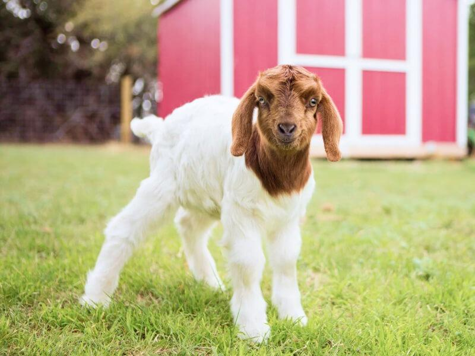
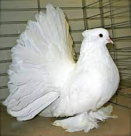

Bienvenidos a Nuestro Blog de Adopcion
No importa lo que hagas o como le trates, el amor de los perros es infinito, su cariño es inmenso y su fidelidad es incondicional, No hay compañero tan fiel como un animal, ni amigo más leal. Ningún amor se le puede comparar, ni el del humano más enamorado por otra persona.
LO ULTIMO DE NUESTRO BLOG
Los animales necesitan cariño

Camina con tu mascota
Deja de soñar🐩🐕🐈🦮
Para muchos de nosotros las mascotas no son simples compañeros, si no son miembros de la familia.

Tom

July

Masha

Lulu

Jamona
